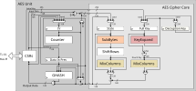

AES Cipher
The module is based on the OpenTitan AES design.
Key sizes: 128, 192 and 256 Modes: ECB, CBC, CFB, OFB, CTR, CTR-GCM

Figure 1 shows the upstream core. The OCAH bus, key-delivery, and entropy connections are described in the integration details below.
1. OCAH Modifications
-
AXI4-lite key bus slave interface replaces side loading interface
-
AXI4-lite control/status bus slave interface
The AES host path follows the standard conversion and isolation sequence in the
crypto interconnect (64-bit AXI → 32-bit AXI → AXI-Lite → isolate), without
address adjustment or cache-attribute patching. aes_wrapper bridges the
isolated path to TL-UL. EDN requests are served by the shared
drbg_axis_edn_adapter instance
u_axis_edn_crypto_s3c_scan, which converts the post-CSRNG DRBG AXI-Stream feed
for the crypto sink domain into AES’s native-protocol EDN response. The adapter
forwards the per-beat FIPS bit from the stream’s tuser sideband into
edn_fips; AES itself does not consume the flag. The AES core uses rst_ni for
both the main and shadow reset domains. Life-cycle escalation is tied to its
inactive state. AES occupies alert indices [4:3] in
OpenTitan Alert Termination and exports an idle_o status output but no
interrupt.
The Key Manager delivers a 256-bit AES key as eight words per share, in the
format given in Key Manager Key Delivery. Software shall set
CTRL_SHADOWED.sideload to select the delivered key. While that bit is 0 the
engine uses its software key registers and the delivered key has no effect,
and no error is reported. Software shall also program CTRL_SHADOWED.key_len
to the 256-bit encoding to consume the whole delivered key: the key length is
independent of the delivery path, and a shorter setting consumes only part of
it. AES carries the two shares into the cipher datapath as a masked pair and
does not combine them on the delivery path.
Consult the OpenTitan AES documentation for the authoritative core functionality of the IP. The register map follows below.
2. Memory Map and Register Reference
2.1. Memory Map
Register offsets are relative to the block base in the subsystem memory map. The detailed map below defines each register and its fields.
2.2. Detailed Register Map
AES Accelerator
AES encryption and decryption engine with SCA and FI countermeasures
Register Arrays:
- KEY_SHARE0[8]: 8 registers, base 0x4, stride 0x4
- KEY_SHARE1[8]: 8 registers, base 0x24, stride 0x4
- IV[4]: 4 registers, base 0x44, stride 0x4
- DATA_IN[4]: 4 registers, base 0x54, stride 0x4
- DATA_OUT[4]: 4 registers, base 0x64, stride 0x4
Register List:
| Address | Name | Access | Description |
|---|---|---|---|
| 0x0 | ALERT_TEST | W | - |
| 0x4 - 0x20 | KEY_SHARE0[8] | W | - |
| 0x24 - 0x40 | KEY_SHARE1[8] | W | - |
| 0x44 - 0x50 | IV[4] | RW | - |
| 0x54 - 0x60 | DATA_IN[4] | W | - |
| 0x64 - 0x70 | DATA_OUT[4] | R | - |
| 0x74 | CTRL_SHADOWED | RW | - |
| 0x78 | CTRL_AUX_SHADOWED | RW | - |
| 0x7C | CTRL_AUX_REGWEN | RW | - |
| 0x80 | TRIGGER | W | - |
| 0x84 | STATUS | R | - |
| 0x88 | CTRL_GCM_SHADOWED | RW | - |
Register Details:
ALERT_TEST
| Bits | Field | Access | Reset | Description |
|---|---|---|---|---|
| 31:2 | Reserved | - | - | Reserved |
| 1 | FATAL_FAULT | W | 0x0 | Write 1 to trigger one alert event of this kind. |
| 0 | RECOV_CTRL_UPDATE_ERR | W | 0x0 | Write 1 to trigger one alert event of this kind. |
KEY_SHARE0[8]
| Bits | Field | Access | Reset | Description |
|---|---|---|---|---|
| 31:0 | KEY_SHARE0 | W | 0x0 | Initial Key Share 0 |
KEY_SHARE1[8]
| Bits | Field | Access | Reset | Description |
|---|---|---|---|---|
| 31:0 | KEY_SHARE1 | W | 0x0 | Initial Key Share 1 |
IV[4]
| Bits | Field | Access | Reset | Description |
|---|---|---|---|---|
| 31:0 | IV | RW | 0x0 | Initialization Vector |
DATA_IN[4]
| Bits | Field | Access | Reset | Description |
|---|---|---|---|---|
| 31:0 | DATA_IN | W | 0x0 | Input Data |
DATA_OUT[4]
| Bits | Field | Access | Reset | Description |
|---|---|---|---|---|
| 31:0 | DATA_OUT | R | 0x0 | Output Data |
CTRL_SHADOWED
| Bits | Field | Access | Reset | Description |
|---|---|---|---|---|
| 31:16 | Reserved | - | - | Reserved |
| 15 | MANUAL_OPERATION | RW | 0x0 | Controls whether the AES unit is operated in normal/automatic mode (0) or fully manual mode (1). In automatic mode (0), the AES unit automatically i) starts to encrypt/decrypt when it receives new input data, and ii) stalls during the last encryption/decryption cycle if the previous output data has not yet been read. This is the most efficient mode to operate in. Note that the corresponding status tracking is automatically cleared upon a write to the Control Register. In manual mode (1), the AES unit i) only starts to encrypt/decrypt after receiving a start trigger (see Trigger Register), and ii) overwrites previous output data irrespective of whether it has been read out or not. This mode is useful if software needs full control over the AES unit. |
| 14:12 | PRNG_RESEED_RATE | RW | 0x1 | 3-bit one-hot field to control the reseeding rate of the internal pseudo-random number generator (PRNG) used for masking. Invalid input values, i.e., values with multiple bits set and value 3'b000 are mapped to the highest reseeding rate PER_1 (3'b001). |
| 11 | SIDELOAD | RW | 0x0 | Controls whether the AES unit uses the key provided by the key manager via key sideload interface (1) or the key provided by software via Initial Key Registers KEY_SHARE1_0 - KEY_SHARE1_7 (0). |
| 10:8 | KEY_LEN | RW | 0x1 | 3-bit one-hot field to select AES key length. Invalid input values, i.e., values with multiple bits set, value 3'b000, and value 3'b010 in case 192-bit keys are not supported (because disabled at compile time) are mapped to AES_256 (3'b100). |
| 7:2 | MODE | RW | 0x3F | 6-bit one-hot field to select AES block cipher mode. Invalid input values, i.e., values with multiple bits set and value 6'b00_0000, are mapped to AES_NONE (6'b11_1111). |
| 1:0 | OPERATION | RW | 0x1 | 2-bit one-hot field to select the operation of AES unit. Invalid input values, i.e., values with multiple bits set and value 2'b00, are mapped to AES_ENC (2'b01). |
CTRL_AUX_SHADOWED
| Bits | Field | Access | Reset | Description |
|---|---|---|---|---|
| 31:2 | Reserved | - | - | Reserved |
| 1 | FORCE_MASKS | RW | 0x0 | Allow the internal masking PRNG to advance (0) or force its internal state (1) leading to constant masks. Setting all masks to constant value can be useful when performing SCA. To completely disable the masking, the second key share (KEY_SHARE1_0 - KEY_SHARE1_7) must be zero as well. In addition, a special seed needs to be loaded into the masking PRNG using the EDN interface. Only applicable if both the Masking parameter and the SecAllowForcingMasks parameter are set to one. |
| 0 | KEY_TOUCH_FORCES_RESEED | RW | 0x1 | Controls whether providing a new key triggers the reseeding of internal pseudo-random number generators used for clearing and masking (1) or not (0). |
CTRL_AUX_REGWEN
| Bits | Field | Access | Reset | Description |
|---|---|---|---|---|
| 31:1 | Reserved | - | - | Reserved |
| 0 | CTRL_AUX_REGWEN | RW0C | 0x1 | Auxiliary Control Register configuration enable bit. If this is cleared to 0, the Auxiliary Control Register cannot be written anymore. |
TRIGGER
| Bits | Field | Access | Reset | Description |
|---|---|---|---|---|
| 31:4 | Reserved | - | - | Reserved |
| 3 | PRNG_RESEED | W | 0x1 | Keep continuing with the current states of the internal pseudo-random number generators used for register clearing and masking (0) or perform a reseed of the internal states from the connected entropy source (1). If the KEY_TOUCH_FORCES_RESEED bit in the Auxiliary Control Register is set to one, this trigger will automatically get set after providing a new initial key. |
| 2 | DATA_OUT_CLEAR | W | 0x1 | Keep current values in Output Data registers (0) or clear those registers with pseudo-random data (1). |
| 1 | KEY_IV_DATA_IN_CLEAR | W | 0x1 | Keep current values in Initial Key, internal Full Key and Decryption Key registers, IV registers and Input Data registers (0) or clear all those registers with pseudo-random data (1). |
| 0 | START | W | 0x0 | Keep AES unit paused (0) or trigger the encryption/decryption of one data block (1). This trigger is cleared to `0` if MANUAL_OPERATION=0 or if MODE=AES_NONE (see Control Register). |
STATUS
| Bits | Field | Access | Reset | Description |
|---|---|---|---|---|
| 31:7 | Reserved | - | - | Reserved |
| 6 | ALERT_FATAL_FAULT | R | 0x0 | No fatal fault has occurred inside the AES unit (0). A fatal fault has occurred and the AES unit needs to be reset (1). Examples for fatal faults include i) storage errors in the Control Register, ii) if any internal FSM enters an invalid state, iii) if any sparsely encoded signal takes on an invalid value, iv) errors in the internal round counter, v) escalations triggered by the life cycle controller, and vi) fatal integrity failures on the TL-UL bus. |
| 5 | ALERT_RECOV_CTRL_UPDATE_ERR | R | 0x0 | An update error has not occurred (0) or has occurred (1) in the shadowed Control Register. AES operation needs to be restarted by re-writing the Control Register. |
| 4 | INPUT_READY | R | 0x0 | The AES unit is ready (1) or not ready (0) to receive new data input via the DATA_IN registers. If the present values in the DATA_IN registers have not yet been loaded into the module this flag is `0` (not ready). |
| 3 | OUTPUT_VALID | R | 0x0 | The AES unit has no valid output (0) or has valid output data (1). |
| 2 | OUTPUT_LOST | R | 0x0 | All previous output data has been fully read by the processor (0) or at least one previous output data block has been lost (1). It has been overwritten by the AES unit before the processor could fully read it. Once set to `1`, this flag remains set until AES operation is restarted by re-writing the Control Register. The primary use of this flag is for design verification. This flag is not meaningful if MANUAL_OPERATION=0 (see Control Register). |
| 1 | STALL | R | 0x0 | The AES unit is not stalled (0) or stalled (1) because there is previous output data that must be read by the processor before the AES unit can overwrite this data. This flag is not meaningful if MANUAL_OPERATION=1 (see Control Register). |
| 0 | IDLE | R | 0x0 | The AES unit is idle (1) or busy (0). This flag is `0` if one of the following operations is currently running: i) encryption/decryption, ii) register clearing or iii) PRNG reseeding. This flag is also `0` if an encryption/decryption is running but the AES unit is stalled. |
CTRL_GCM_SHADOWED
| Bits | Field | Access | Reset | Description |
|---|---|---|---|---|
| 31:11 | Reserved | - | - | Reserved |
| 10:6 | NUM_VALID_BYTES | RW | 0x10 | Number of valid bytes of the current input block. Only the last block in the GCM_AAD and GCM_TEXT phases are expected to have not all bytes marked as valid. For all other blocks, the number of valid bytes should be set to 16. Invalid input values, i.e., the value 5'b0_0000, and all other values different from 5'b1_0000 in case GCM is not supported (because disabled at compile time) are mapped to 5'b1_0000. |
| 5:0 | PHASE | RW | 0x1 | 6-bit one-hot field to select the phase of the Galois/Counter Mode (GCM) of operation. Invalid input values, i.e., values with multiple bits set and value 6'b00_0000, are mapped to GCM_INIT (6'b00_0001). In case support for GCM has been disabled at compile time, this field is not writable and always reads as GCM_INIT (6'b00_0001). |